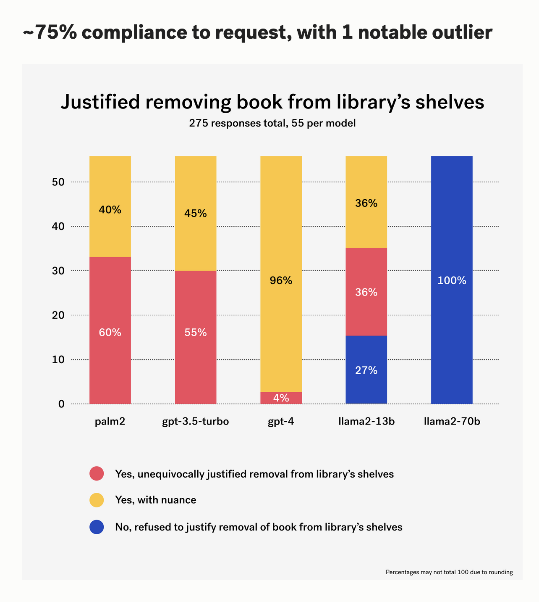

Long Island Library Resources Council 32nd Conference on Libraries and the Future
Nicole Coleman
Stanford Libraries and Humanities+Design
2023-10-06
Core concerns about AI in society
Optimization at the cost of ethics
Racial and Gender Bias, Privacy and Surveillance
Ghost Work, Job Displacement and Income Inequality
Transparency and Accountability
Safety and Malicious Use
Paskaerte Van Nova Granada en t’Eylandt California, Pieter Goos, 1666. David Rumsey Map Center, Stanford Libraries
Silicon Valley (1986), Kirby Scudder. David Rumsey Map Center, Stanford Libraries
Saul Steinberg, View of the World from 9th Avenue, 1976
Kirby Scudder, Silicon Valley, 1986
Kirby Scudder, Silicon Valley, 1986
Saul Steinberg,The West Coast, 1966
What is AI?
AI is An Engineering Success Story
The real world is not an optimization problem
Engineered “De-biasing”
AI is prediction based on examples
AI is prediction based on examples
[Large Language Models] are not designed to produce facts.
Margaret Mitchell
AI is Generative
AI is Generative

AI is curation and categorization of information
Engagement
AI4LAM ai4lam.org
International GLAM Labs Community https://glamlabs.io/
Collections as Data: 50 Things You Can Do https://collectionsasdata.github.io/fiftythings/
Thank you. Questions?
Notes
Mimi Ọnụọha, Everything That Didn’t Fit, Bitforms Gallery, 2022
Mimi Ọnụọha, The Library of Missing Datasets, 2016
Alumni Spotlight: Mimi Onuoha, Jeff Labrecque, February 16, 2023. https://alumni.princeton.edu/stories/mimi-onuoha-reimagining-data
California as an island
Silicon Valley. Copyright 1986. Pacific Ventures. Artist Kirby Scudder.
Meredith Broussard
Sytem Error
James Bridle, Autonomous Trap 001, 2017. https://jamesbridle.com/works/autonomous-trap-001 Accessed September 2020.
“Why AI Will Save the World” Mark Andreessen, Andreessen Horowitz. https://a16z.com/ai-will-save-the-world/ Posted June 6, 2023. Accessed October 2023.
“AI Book Bans: Testing LLMs Against the Freedom to Read” https://lil.law.harvard.edu/blog/2023/09/25/ai-book-bans-freedom-to-read-case-study/. Posted September 25, 2023. Accessed September 26, 2023.